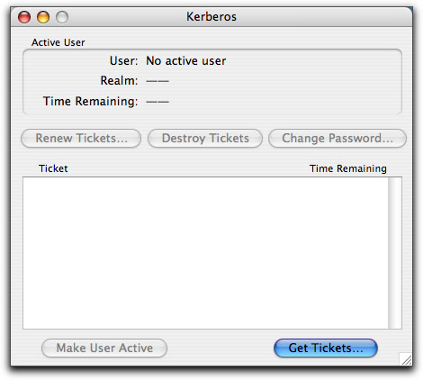
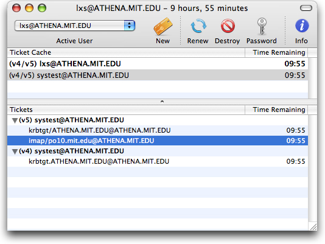
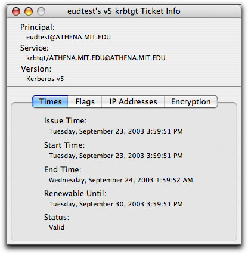
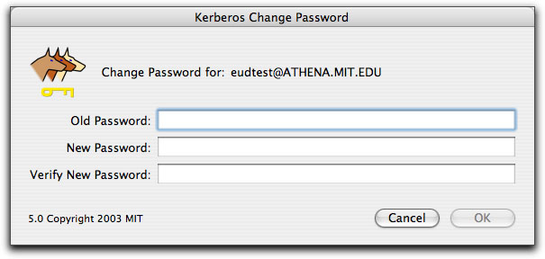
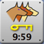
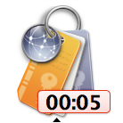
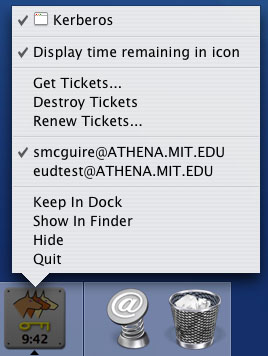
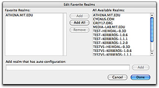
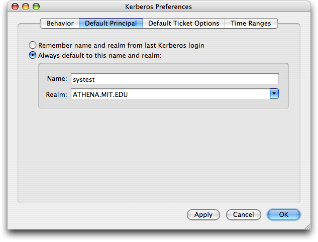
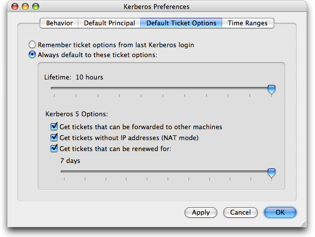

Using the Kerberos Application on Mac OS X |
This web page has instructions for the Kerberos application for Mac OS X.
These instructions reflect the Kerberos application on Mac OS X 10.3. While the Kerberos application is similar on previous OS X releases, not all features described below may be available or located in the same place.
MIT users should consult the Kerberos for Macintosh at MIT documentation, which reflects the currently supported version.
If you're not familiar with Kerberos authentication and terms such as Kerberos tickets, go to What Is Kerberos? to learn the concepts and terms.
To open the Kerberos application:
If you have installed the Mac OS X Kerberos Extras, go to the Applications folder, open the Utilities folder, and open the Kerberos icon.
Otherwise, you will need to navigate to the /System/Library/CoreServices directory (use the Go To Folder... item in the Finder's Go menu), and open the Kerberos icon from there. (You may want to install the Kerberos Extras or make your own alias in a more convenient location.)
Result: The Kerberos application window is displayed.
Below the Kerberos window's toolbar are the Ticket Cache list and the Tickets list. The ticket cache list shows all the principals that are currently authenticated in the current Mac OS X user's session. The tickets list shows the tickets in the selected ticket cache.
Each principal has a set of Kerberos tickets belonging to it. When you log in with Kerberos, you get a ticket-granting ticket which then allows you to get other tickets from other applications (also called services). Then for each application you run that requires Kerberos authentication, you get a service ticket.
Each line in the Ticket Cache list has three elements:
Instead of a time, you may see either "expired" or "not valid" in the Time Remaining column. "Expired" means that your tickets have no time remaining and so are no longer valid; "not valid" means they are no longer valid for some other reason, usually because your Mac's IP address has changed since you obtained the tickets. In either case, you need to renew your tickets. Kerberos for Macintosh will also prompt you automatically to renew if you try to use a service requiring Kerberos tickets.
If you want to see details of tickets associated with each principal, select that principal in the Ticket Cache list. Tickets for that list will appear in the Tickets list:

In the Tickets list, you will see a list of the tickets (credentials) belonging to that principal. If the principal is authenticated for both versions of Kerberos, the tickets are grouped by version underneath a subheading for each version (see picture above).
You can display even more detailed information about each ticket using the Ticket Info window. See the Displaying ticket information section.
The current, active user specifies which Kerberos principal will be used for authentication when you work with an application that requires Kerberos authentication. If more than one Kerberos user is logged in, you may want to change the active user before using such an application.
Use one of the following techniques to change the active user:
Result: The new active user is displayed in the toolbar Active User menu and also appears bold in the ticket list.

To destroy tickets, select an entry in the Ticket Cache list then click on the Destroy button, or choose Destroy Tickets from the Tickets menu.
Result: The ticket entry is removed from the ticket list. If other Kerberos users are logged in, their usernames remain in the ticket list and their tickets are valid for the remaining time indicated.
If your tickets have expired, or you want to extend the lifetime of existing tickets, you may want to renew your tickets.
As of Mac OS X 10.3 and later, Kerberos for Macintosh supports the "renewable" property for tickets. If your site allows tickets to have this property, you can renew tickets up for a set amount of time without re-entering your password, as long as your current tickets are still valid (that is, haven't expired). By default, Kerberos for Macintosh tries to get tickets with the "renewable" property; you can change this in the Authenticate to Kerberos dialog options or in the Kerberos application preferences.
By default, the Kerberos application will automatically attempt to renew your tickets if you leave it running (you can close the main window for convenience). Once half your ticket's lifetime has expired, if it has the "renewable" property, the Kerberos application will automatically issue a renew request for it. It will keep doing this up until the renewable time limit. You can control this behavior by checking or unchecking the "Auto-renew renewable tickets" checkbox in the Kerberos application preferences.
You can see if a ticket is renewable, and for how long, by using the ticket information window. See Displaying ticket information below.
If your tickets are expired, or you choose not to use the auto-renew feature and want to renew your tickets before they expire, or your tickets do not support the "renewable" property, use the Renew Tickets command.
Result: The Renew button is activated.
Result: Either your tickets are renewed to their full lifetime (if your ticket had the "renewable" property and were not expired), or the Kerberos Login dialog box is displayed (if your tickets didn't have the "renewable" property or they were expired).
Result: The tickets' lifetime is extended either to the lifetime you specified when logging in or to the maximum duration set under Preferences... (the default is 10 hours). To change the default tickets' lifetime, see Changing Preferences. If you are very close to the maximum renewable lifetime, your tickets will only be good for the time remaining until the end of the renewable lifetime, which may be shorter than your requested lifetime.
If you are interested in more information about your Kerberos tickets, the Kerberos application can display detailed information about each ticket in the Tickets list by using the Get Ticket Info command. To display detailed ticket information:
Result: The Ticket Info window appears:

At the top of the ticket info window is the principal who owns the ticket, the service that the ticket was obtained for, the Kerberos version of the ticket and the ticket's status. The rest of the information is divided into several panes for easier reading:
You can have more than one ticket info window open at once. If the tickets are destroyed, the ticket info window will close.
You can change your Kerberos password by using the Change Password... command.
To change your password,
Result: The Change Password... button is activated:
Result: The Kerberos Change Password dialog box appears with the name of the user selected previously at the top:

Result: Either you will receive a confirmation that your password has been changed, if you entered either your old password incorrectly or the entries for the new password don't match exactly, you'll get an error. You may also receive an error from the Kerberos server if you try to choose an insecure password.
This password stays in effect until you change it again using either the Kerberos application or the equivalent procedure on another Kerberos client on another platform.
The Kerberos application's dock icon has several features to help you quickly determine the status of the active user's tickets and to manage your Kerberos tickets.
In the dock icon, the color of the key in the dock icon changes to indicate the status of the active user's tickets. Below the key is a display of the time remaining in the active user's tickets in the form hours:minutes (the time remaining display can be turned off in the Preferences dialog). The possible states are:
 Gold badge: The active user has valid tickets.
 Red badge: The active user's tickets are near expiration (less than 5 minutes lifetime remain).
No badge: The active user's tickets have expired, or no tickets are in the cache.
No "running" triangle: The Kerberos application is not running.
You can close the ticket list window without quitting the Kerberos application, so that you can still have the dock icon showing without cluttering your screen with a window you don't always need open.
If you control-click (or click and hold down for a few seconds) on the Kerberos application's dock icon while the application is running, the Kerberos dock menu will appear:
(If the only option you see in the Kerberos Dock Menu is "Show in Finder", the Kerberos application is not running.)
The Dock Menu items perform the following functions:
Get Tickets... - Displays the Kerberos Login dialog, allowing you to get tickets for a new user (or new tickets for an existing user).
Destroy Tickets - Destroys the active user's tickets (the active user is indicated by a checkmark next to the user's principal in the user list). If no users are authenticated, this option will be disabled.
Renew Tickets... - Renews the active user's tickets (the active user is indicated by a checkmark next to the user's principal in the user list). If the tickets do not have the renewable property, will display the Kerberos Login dialog, otherwise, renewal will happen automatically. If no users are authenticated, this option will be disabled.
Validate Tickets - Validates the active user's tickets (the active user is indicated by a checkmark next to the user's principal in the user list). This is only necessary if you have post-dated tickets (ie: tickets whose start time was in the future when they were acquired). This option is not commonly used.
Change Password... - Brings up the change password dialog for the active user (the active user is indicated by a checkmark next to the user's principal in the user list).
Available tickets (variable text) - These are the principals of the currently authenticated users. The active user is marked with a checkmark. You can change the active user by choosing another principal from the menu.
Keep In Dock/Remove from Dock - Changes whether or not the Kerberos application icon appears in the dock when the application is not running.
Show In Finder - Opens the folder containing the Kerberos application in the Finder.
Hide - Hides, but does not quit, the Kerberos application.
Quit - Quits the Kerberos application.
The Kerberos application realms editor can be used to set which Kerberos realms appear in the Authenticate to Kerberos dialog's realms popup list and to edit the system Kerberos configuration. For more information about the system Kerberos configuration, see the Kerberos Preferences documentation.
Most users should only need to use the Realms Editor to add realms to the Authenticate to Kerberos dialog realms popup list. Most sites are either configured for automatic Kerberos configuration via DNS SRV records or provide an installer to place a site-specific Kerberos configuration file on your machine.
To bring up the Kerberos realms editor, choose Edit Realms... from the Edit menu or press Command-E.
Result: The Edit Realms dialog box appears (see illustrations below).
The edit realms dialog is divided into two halves. The left half of the dialog contains the Realm list, + and - buttons to add and remove realms, and a Make Default button to change the library default realm.
Note that the library default realm is not the same realm as the one that appears by default in the Authenticate to Kerberos dialog realms popup list. The library default realm is a system-wide setting which determines which realm the popup menu and other tools default to using. If a user has already set a preference for the popup menu, this setting will not override it.
The right half of the dialog is a tab view which reflects the realm configuration for the realm which has been selected in the realms list. These are divided into three groups: settings, servers and domains.
Settings:
Servers:

Clicking on the servers tab displays the servers for the selected realm. If your realm uses DNS SRV records for automatic configuration, you can leave this list blank. Otherwise you can use the + and - buttons to add and remove servers.
Each server has 4 fields associated with it:
- Version: (default=v5) This setting specifies which Kerberos protocol versions the server responds to. Possible values are v5 or v4.
- Type: (default=kdc) The protocol the server responds to. Possible values are:
- kdc: A server that responds to ticket requests.
- admin: A server which responds to administrative and change password requests. Most sites only have one of these per Kerberos version.
- kpasswd: A server which responds to change password requests. If there is no kpasswd server configured for a realm, an admin server will be used instead.
- krb425: A server which can issue v4 tickets from v5 tickets.
- Server: (default=none) The fully qualified DNS name or IP address of the server.
- Port: (default=depends on the Type) The network port the server listens on for requests. If you leave this blank it will automatically be filled in with the correct default port for the Type.
Domains:

Clicking on the domains tab displays the DNS domains which this realm serves. These domains are used to determine what realm is used when contacting a given server. For example, in the above list the domain "mit.edu" uses the realm "ATHENA.MIT.EDU". So when contacting a server "myserver.mit.edu", Kerberos would try to use the realm "ATHENA.MIT.EDU".
If your realm has the same name as the domain (ie: domain "example.com" and realm "EXAMPLE.COM"), you can leave this list blank. Otherwise you can use the + and - buttons to add and remove domains.
If you have more than one domain listed for a given realm, you can choose which one of them is the default domain with the Make Default button. This domain is used when translating v4 principals to v5 principals. v4 principals do not have fully qualified server host names and v5 ones do (ie: imap/mailserver@ATHENA.MIT.EDU becomes imap/mailserver.mit.edu@ATHENA.MIT.EDU), so Kerberos needs to know the primary domain for the realm. If no default domain is specified, Kerberos will assume that the realm and domain name are the same.
Note that you can only list a domain under one realm since each domain must map to a single realm. If you attempt to list the same domain for two realms, the realms editor will give you an error.
At the bottom of the dialog is the Configure additional realms automatically using DNS checkbox. This setting determines whether or not DNS is used to automatically determine Kerberos server information for a realm (ie: the information in the servers tab). Normally you want this setting on, however if you are in on a slow network, unchecking this checkbox and specifying the servers in the servers tab may improve Kerberos performance.
When you have finished adding and/or removing realms, click on OK.
Result:If you've added one or more realms, they are now available from the Authenticate to Kerberos dialog box. If you've removed any realms, they are no longer available for use unless you add them again later on.
To find out how to change the default realm in the Authenticate to Kerberos dialog, refer to Changing preferences.
You can make certain customizations to the Kerberos application by using the Preferences... command. Many of these customizations also affect the Authenticate to Kerberos dialog anytime another application brings it up.
Behavior:

Default Principal:
Default Ticket Options:
Time Ranges: